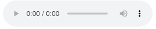
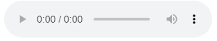

Entrevista
Com Professor Ruan
Nesta entrevista, abordaremos assuntos como:
Clique no play do player abaixo para escutar a entrevista (em breve uma transcrição estará disponível).
Nesta entrevista, abordaremos assuntos como:
Clique no play do player abaixo para escutar a entrevista (em breve uma transcrição estará disponível).
